Problem Discovered: During the two years studying abroad, I realized that certain appearances were advocated by social media and commercial advertisements, but people who do not have those appearances, especially girls, are suffering great stress in East Asian countries.
Interview: I asked what kind of appearance would the interviewees consider good-looking, and I was curious about the reasons that have been influencing them. The common results of the interview were the impression of the fair skin tone and skinny body type that were conveyed through commercial advertisements and dramas.
Solution: I merchandised exaggerated products, including “Wearable Face Filter, ” on the self-initiated Ecommerce Platform to advocate mind changes towards the diversity and difference of appearances.
Programming: I was responsible for programming. I used HTML and CSS to frame the outlook and employed Onclick Event to execute JavaScript functions which guide users through the whole website. Moreover, I utilized CSS animations with getElementById() Method to make user’s experience more rewarding and also created an Interactive psychological game to grasp users’ attention with Arrays, If…else Statement and For Loop in JavaScript. As for the result of the game, I embedded Switch Statement in JavaScript to decide the result and used Window Location object to bring the users to products according to their results.
I used HTML to create cards and arrange them with a grid including rows and columns. As for the customized button icons, I used links from icons8.com in CSS.
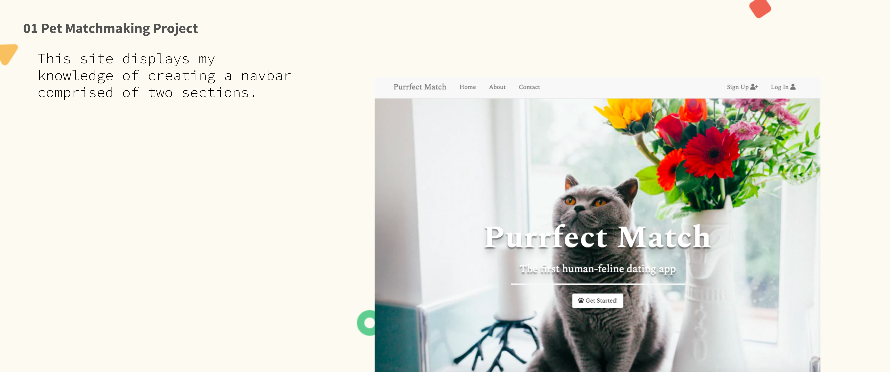
Pet Matchmaking Project
I used Bootstrap 4 to create collapse navbar for the Responsive Web Design, and also made the navbar to be comprised of left and right parts with HTML. Photo by Josh Couch on Unsplash
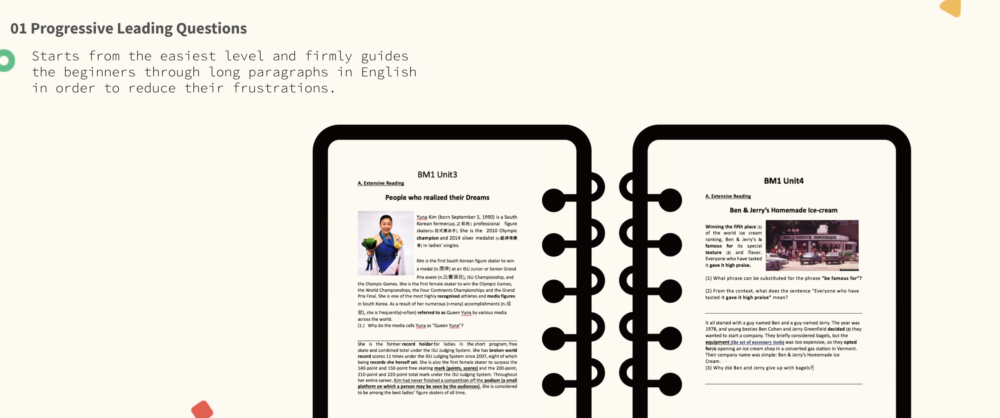
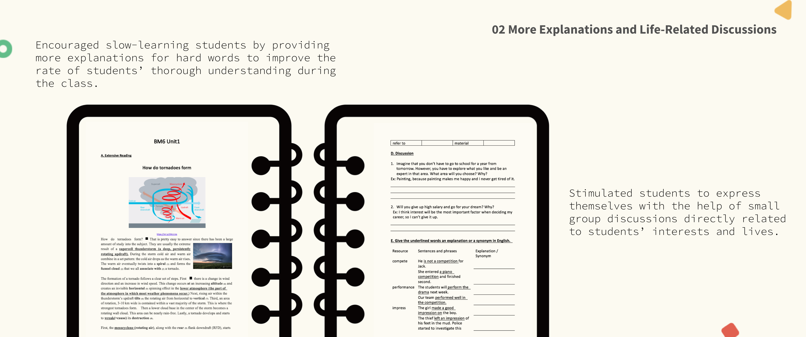
Educational Material Writer
Composed progressive questions which start from the easiest level and firmly guide the beginners through long paragraphs in English in order to reduce their frustrations.
Encouraged slow-learning students by providing more explanations for hard and new words to improve the rate of students’ thorough understanding during the class.
Stimulated students to express themselves with the help of small group discussions directly related to students’ interests and lives instead of whole class discussion.
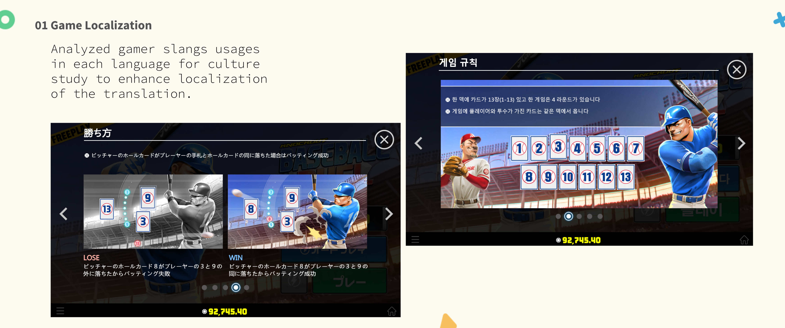
Game Localization
Analyzed gamer slangs usages in each language for culture study to enhance localization of the translation. For example, I watched video game live streams on social media.
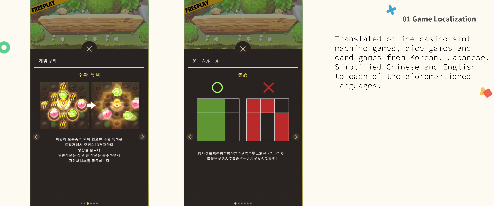
Game Localization
Translated online casino slot machine games, dice games and card games from Korean, Japanese, Simplified Chinese and English to each of the aforementioned languages.
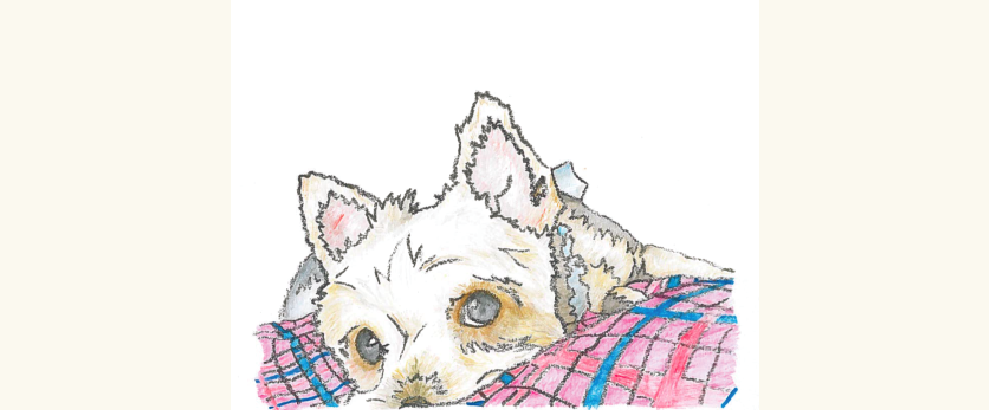
Colored Pencil Illustration
Influenced by the drawing style of Hayao Miyazaki, I strove to make every stroke and shade representative of the puppy in order to deliver a clean and eye-cathing painting.
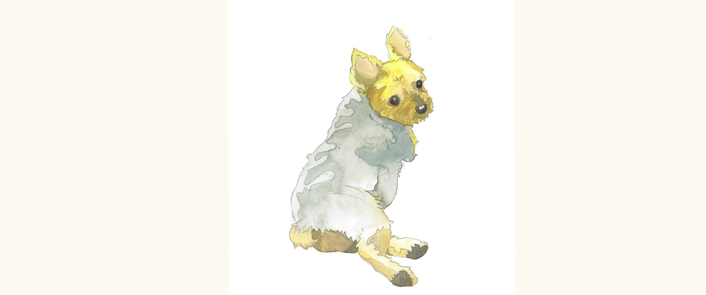
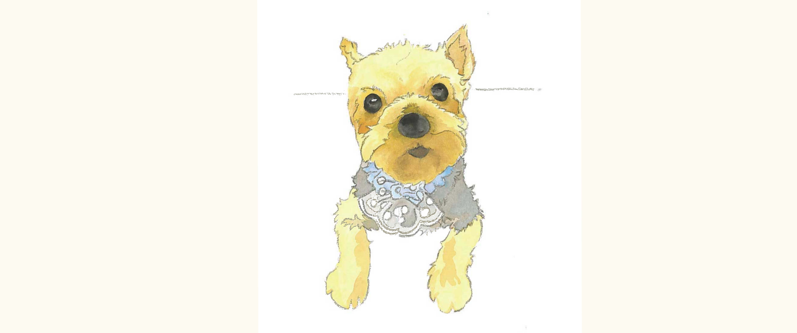
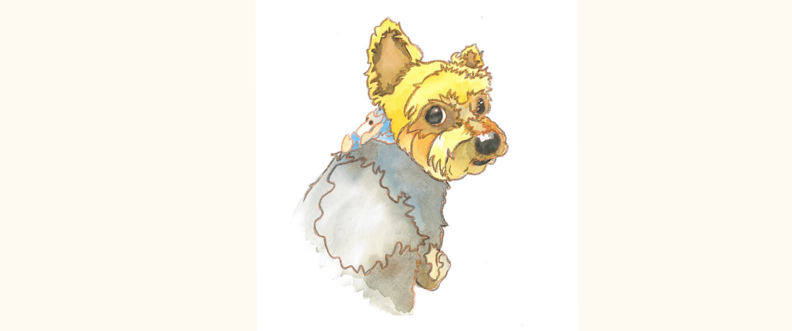
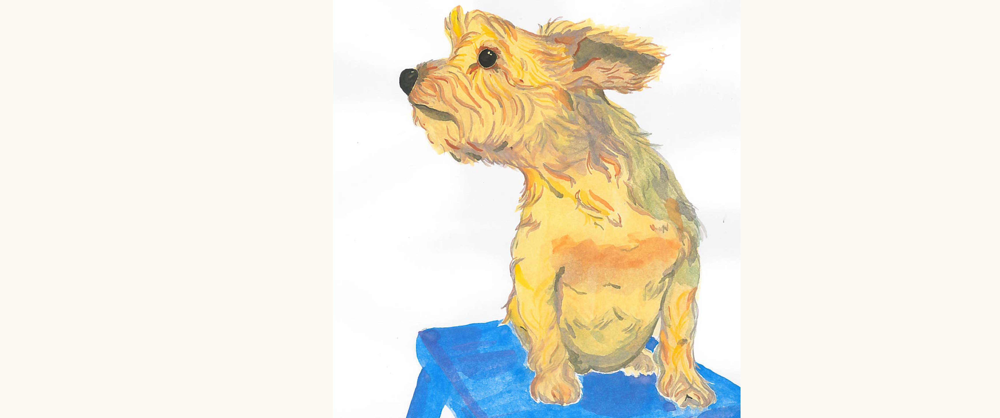
Watercolor Painting Illustration
These are different styles that I have been preparing for to create Line stickers.
 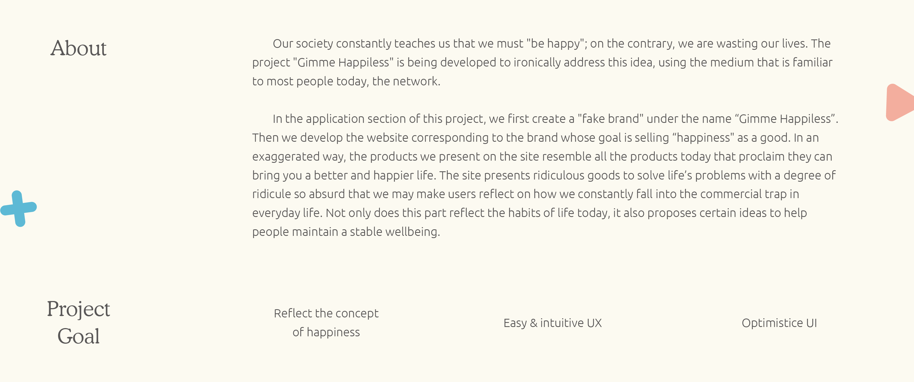
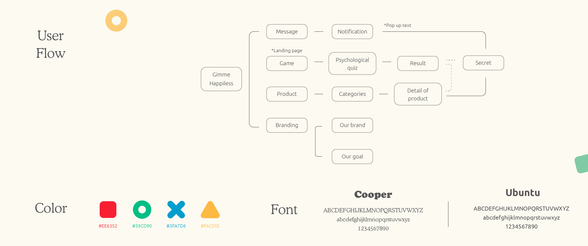
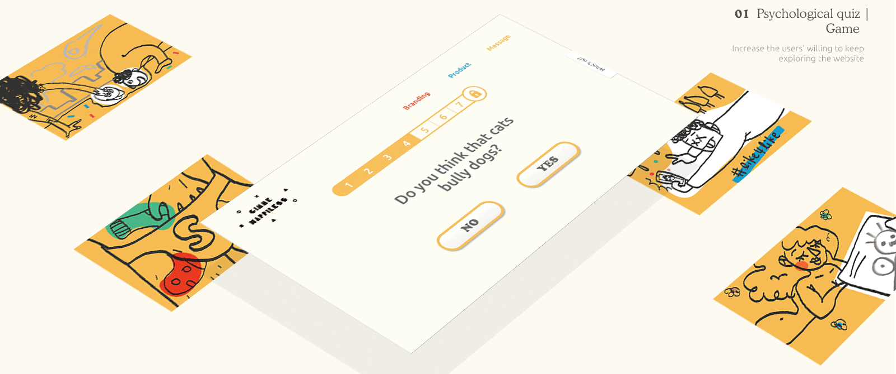
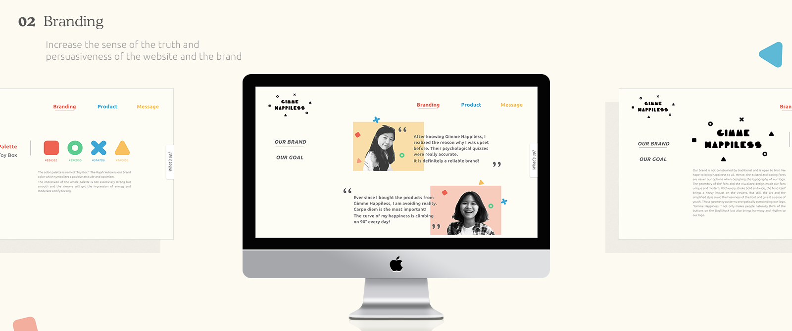
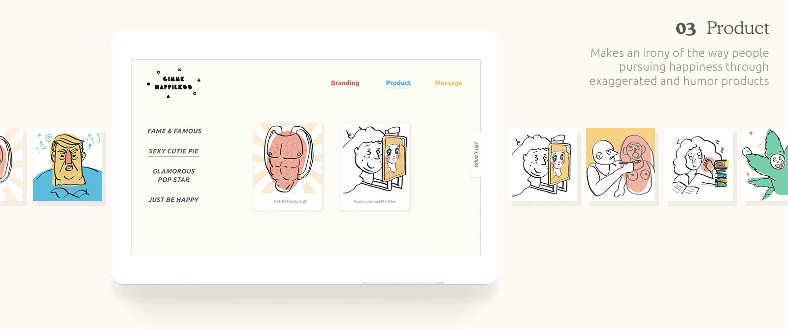
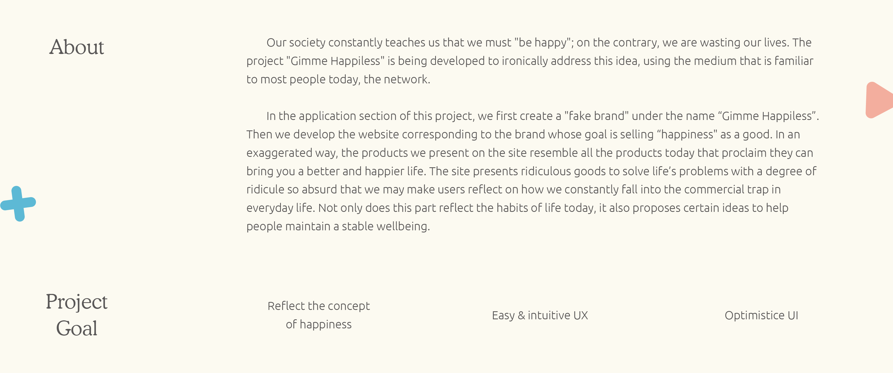
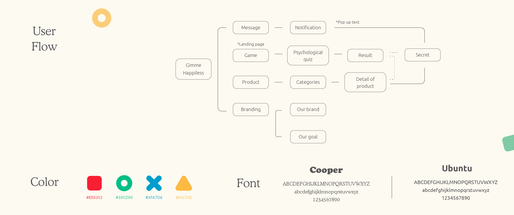
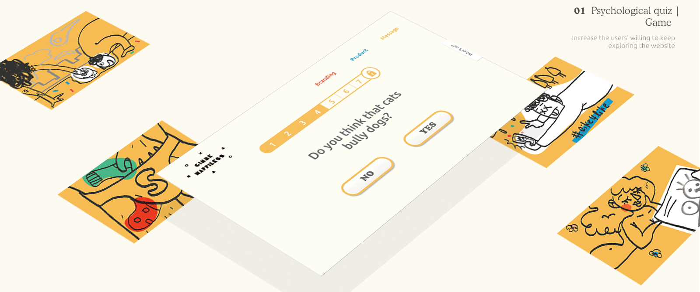
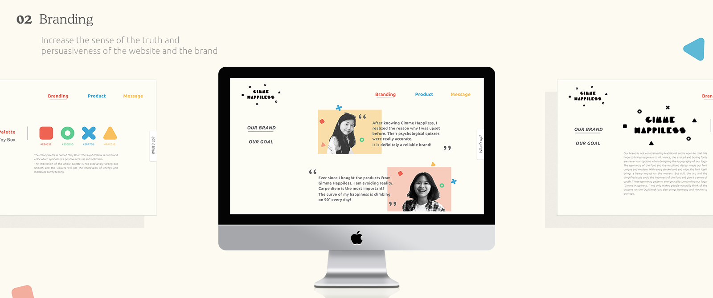
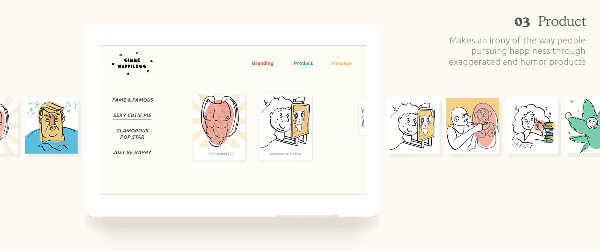
 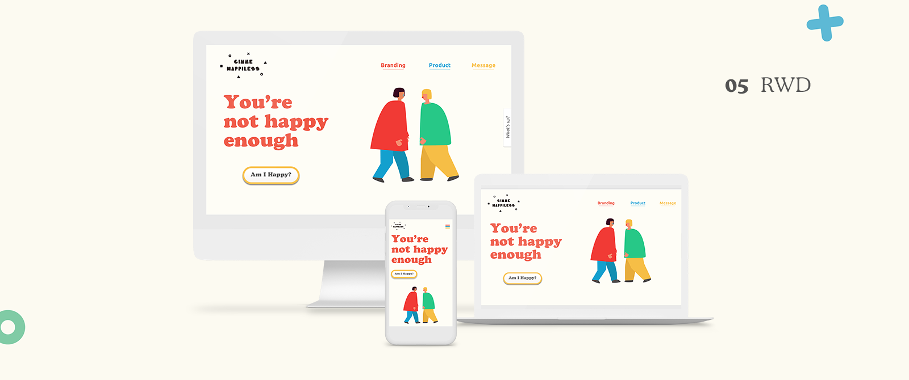
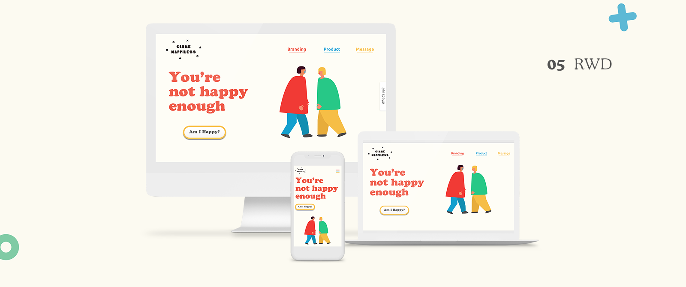